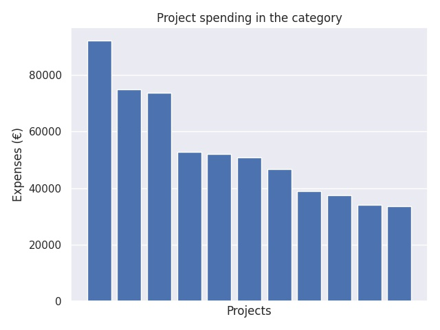

Vientiteollisuusalojen ammatillisen koulutuksen kehittäminen
Category summary
53.3K spent on average
91.9K highest spending

Reports in the category
Länsirannikon Koulutus Oy WinNova
Project name: Vientiä ammattiin III
91.9K spent
Tampereen kaupunki/ Tampereen seudun ammattiopisto, Tredu
Project name: Viete III
74.7K spent
Vaasan kaupunki/Vaasan ammattiopisto
Project name: Erityisosaaja vientiteollisuudessa
73.6K spent
Sastamalan Koulutuskuntayhtymä
Project name: VIKE3 - Vientiteollisuusalojen koulutuksen kehittäminen
52.7K spent
Oulun seudun koulutuskuntayhtymä / Oulun seudun ammattiopisto
Project name: KUMPPANUUS YTIMENÄ 3. - Ammatillista osaamista vientiteollisuuden tarpeisiin
52K spent
Svenska Österbottens förbund för utbildning och kultur / Yrkesakademin
Project name: Energiakademin PRO
50.7K spent
Koulutuskuntayhtymä Tavastia
Project name: Satelliittikoulut
46.7K spent
Lounais-Suomen ammattiopisto Novida
Project name: ProVakka
38.9K spent
Optima samkommun
Project name: Opti Xport
37.4K spent
Kemi- Tornionlaakson koulutuskuntayhtymä Lappia
Project name: VIME
34.1K spent
Ylä-Savon koulutuskuntayhtymä
Project name: Sujuva polku töihin – Yrityslähtöistä metallioppia
33.6K spent